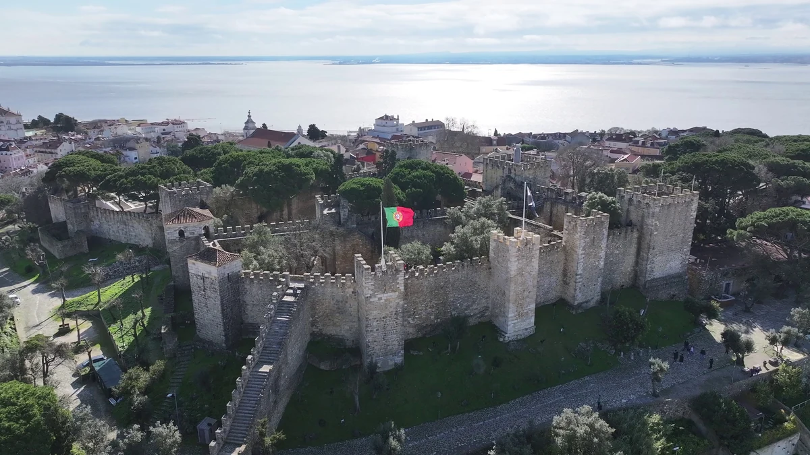

Início › Destinos › Lisboa › Descontos
Descontos e dias grátis em Lisboa
Gratuidade de residente, dia e hora mais baratos, faixas de criança, jovem e sénior, e a conta do Lisboa Card, nos pontos pagos do guia. Cada linha leva à ficha do ponto, com a fonte. Preços apurados em 13 de setembro de 2026.
Apurado por Allan Vitor · @viagemnalupabr (abre em outra aba)

Storyblocks · licença royalty-free · SBI-357621577
Morar em Portugal, ou em Lisboa, muda o preço
Quase toda gratuidade de Lisboa é para residente. Para o turista brasileiro, este bloco é sobretudo o que não vale.
- Mosteiro dos Jerónimos: Quem mora em Portugal tem o Acesso 52: 52 entradas gratuitas por ano nos monumentos do Estado, com Cartão de Cidadão, só na bilheteira física. Para quem não mora, não há dia grátis.
- Palácio Nacional da Pena: Residentes em Portugal entram de graça aos domingos e feriados, cerca de 60 dias por ano, na bilheteira, no dia, com documento.
- Castelo dos Mouros: A mesma regra da Parques de Sintra: grátis para residentes em Portugal aos domingos e feriados, na bilheteira.
- Padrão dos Descobrimentos: Residentes no concelho de Lisboa entram de graça aos domingos e feriados até às 14h. É recorte municipal, mais estreito que morar em Portugal.
- Quinta da Regaleira: Munícipes de Sintra entram de graça. Mas a Regaleira não participa do domingo grátis para residentes em Portugal: no domingo paga-se os € 20.
- Castelo de São Jorge: Acabou a gratuidade para morador de Lisboa, que valia desde 2005: desde 3 de julho de 2025 o lisboeta paga os mesmos € 17.
O dia, a hora e o jeito de pagar
O mesmo ponto, mais barato por causa da hora, do cartão de transporte ou do combinado.
- Museu Calouste Gulbenkian: Grátis aos domingos a partir das 14h, para todos.
- Oceanário de Lisboa: Não há dia grátis, mas a faixa das 16h é a mais barata: € 25 o adulto, contra € 29 entre 10h e 11h30.
- Elétrico 28: Pagando a bordo, € 3,30; com saldo no cartão Navegante Ocasional, que custa € 0,50 uma vez, € 1,72.
- Castelo dos Mouros: Comprando dois monumentos da Parques de Sintra juntos, 5% de desconto. O combinado “Viver Sintra: Palácios Reais”, a € 42, junta Pena, Palácio Nacional de Sintra e o transporte de 24 horas, contra € 46,50 avulso.
Criança, jovem e sénior
Em Portugal, sénior é a partir dos 65 e as faixas de jovem mudam de casa para casa. Todos pedem documento.
- Mosteiro dos Jerónimos: Criança até 12 anos não paga. Jovem de 13 a 24 e sénior a partir de 65 pagam metade: € 9.
- Torre de Belém: As mesmas faixas da rede do Estado: grátis até 12 anos; € 7,50 para jovem de 13 a 24 e sénior a partir de 65.
- Padrão dos Descobrimentos: Inteira € 10; jovem de 13 a 25 não residente em Lisboa, € 5; sénior a partir de 65 não residente, € 8,50.
- Castelo de São Jorge: Criança até 12 anos não paga; jovem de 13 a 25, € 8,50; sénior a partir de 65, € 14.
- Palácio Nacional da Pena: Jovem de 6 a 17 e sénior a partir de 65, € 18; família de dois adultos e dois jovens, € 65; pessoa com deficiência, 50%.
- Quinta da Regaleira: Jovem de 6 a 17 e sénior a partir de 65, € 15; criança até 5 anos não paga; família, € 60.
- Museu Calouste Gulbenkian: Grátis para menores de 18 anos. Menores de 30 têm 25% e maiores de 65, 10%; com o Cartão Gulbenkian, de adesão gratuita, os menores de 30 pagam metade.
- Oceanário de Lisboa: Criança de 3 a 12, de € 15 a € 17 conforme a hora; sénior, de € 17 a € 19; até 2 anos não paga.
Quando o Lisboa Card compensa
Preços em vigor de abril de 2026 a março de 2027: 24h € 31, 48h € 51, 72h € 62 para adulto; € 21, € 28 e € 35 para criança de 4 a 15 anos. Inclui transporte público ilimitado — metro, Carris, elétricos, e os comboios urbanos para Sintra e Cascais.
A conta, com os preços que apuramos: o passe de transporte de 24h com comboio custa € 11,40 sozinho. Some uma entrada nos Jerónimos, a € 18, e já dá € 29,40 — falta € 1,60 para compensar. Some duas entradas grandes, Jerónimos e Torre, e dá € 44,40 contra os € 31 do cartão: folga de € 13,40. Ou seja, o de 24h compensa a partir de duas entradas no dia; o de 48h, a partir de duas entradas grandes no total; o de 72h, com apenas duas. Quanto mais dias, mais fácil compensar, porque o transporte incluído vira a parte pesada do valor.
Onde o cartão dá entrada livre: Jerónimos, Torre de Belém, Castelo de São Jorge, Museu dos Coches, Padrão dos Descobrimentos e o Arco da Rua Augusta. Onde dá só desconto: Gulbenkian 20%, Regaleira 20%, Oceanário 15% e Palácio da Pena 10%. Repare que os três lugares que quase todo brasileiro quer ver — Oceanário, Pena e Regaleira — não são grátis com o cartão.
E há uma armadilha no cartão infantil: crianças até 12 anos já entram de graça em Jerónimos, Torre, Castelo e Padrão. O cartão de criança, a € 21, compra basicamente transporte. Só passa a fazer sentido dos 13 aos 15 anos, quando o menor já paga meia nos monumentos nacionais.
O que se compra online é um voucher, trocado presencialmente por cartão físico. A ativação é manual e o relógio começa a correr quando você escreve a data e valida num transporte — não quando retira.
Os 4 pontos que não cobram entrada
Praça do Comércio e o Arco da Rua Augusta, Miradouros de Alfama, Time Out Market e Cabo da Roca e Cascais. O que cada um cobra à parte está na lista dos pontos gratuitos.
O que mais se pergunta sobre descontos em Lisboa
Tem dia grátis nos monumentos de Lisboa?
Para quem não mora em Portugal, não nos monumentos do Estado: o domingo de manhã grátis acabou e virou o Acesso 52, só para residentes. O que vale para todos: o Gulbenkian, grátis aos domingos a partir das 14h.
Criança paga nos monumentos de Lisboa?
Nos monumentos do Estado (Jerónimos, Torre de Belém, Coches) e no Castelo de São Jorge, criança até 12 anos não paga. No Gulbenkian, menores de 18 não pagam.
O Lisboa Card vale a pena?
Custa € 31 (24h), € 51 (48h) e € 62 (72h) e inclui o transporte. Pela conta do guia, o de 24h compensa a partir de duas entradas no dia. Mas Oceanário, Pena e Regaleira não são grátis com ele: dão só desconto.
Qual a hora mais barata do Oceanário?
Não há dia grátis, mas a faixa das 16h é a mais barata: € 25 o adulto, contra € 29 entre 10h e 11h30.
As outras páginas de Lisboa
Hospedagem
Leve o documento de cada desconto: sem ele, a bilheteira cobra a inteira. A hospedagem e a passagem não entram nos preços desta página; a ficha de custos traz as duas, com a data da apuração.
Este link dá comissão ao site. Você paga o mesmo preço que pagaria indo direto, e a comissão não altera nenhum número do site. Como isso funciona.